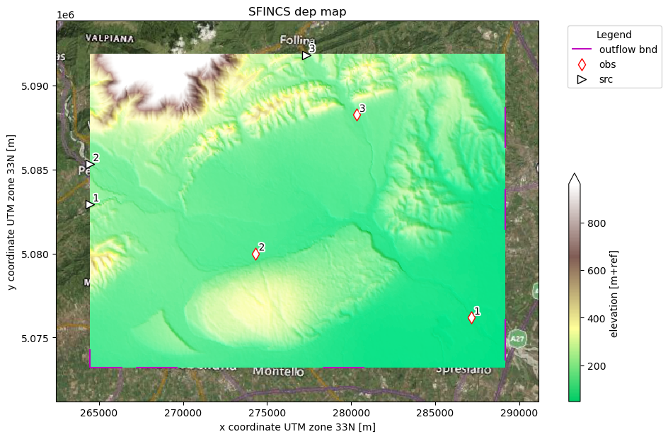
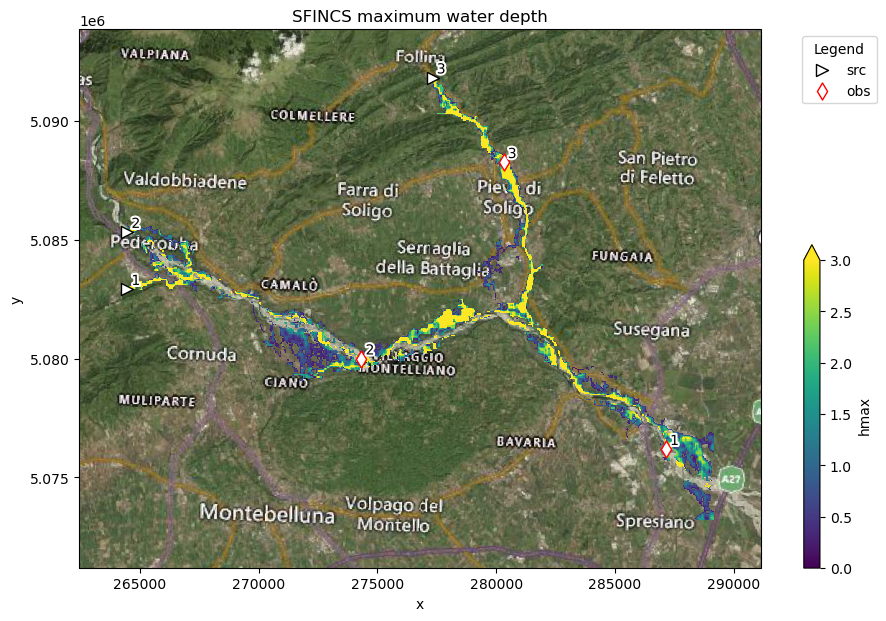

Sfincs results: maximum water depth
[1]:
# import dependencies
import xarray as xr
import numpy as np
from os.path import join
import matplotlib.pyplot as plt
import hydromt
from hydromt_sfincs import SfincsModel
Read model results
The model results in sfincs_map.nc are saved as in a staggered grid format, see SGRID convention. Here we show how to retrieve the face values and translate the dimensions from node indices (m, n) to (x, y) coordinates in order to plot the results on a map.
[2]:
sfincs_root = "sfincs_riverine" # (relative) path to sfincs root
mod = SfincsModel(sfincs_root, mode="r")
[3]:
# we can simply read the model results (sfincs_map.nc and sfincs_his.nc) using the read_results method
mod.read_results()
# the following variables have been found
list(mod.results.keys())
[3]:
['inp',
'msk',
'qinf',
'zb',
'zs',
'h',
'zsmax',
'hmax',
'cuminf',
'total_runtime',
'average_dt',
'point_zb',
'point_zs',
'point_h',
'point_u',
'point_v',
'point_qinf']
[4]:
fig, ax = mod.plot_basemap(fn_out=None, bmap="sat", figsize=(11, 7))

Write maximum waterdepth to geotiff file
[5]:
# write hmax to <mod.root>/gis/hmax.tif
mod.write_raster("results.hmax", compress="LZW")
# this is identical to the following:
# hmax = mod.results['hmax']
# hmax = hmax.reindex(y=list(reversed(hmax['y'].values))) # change orientation to N -> S
# hmax.raster.to_raster(join(mod.root, 'gis', 'hmax.tif'), compress='LZW')
Plot maximum water depth with surface water mask
First we mask the water depth based on a map of permanent water to get the flood extent. The mask is calculated from the Global Surface Water Occurence (GSWO) dataset.
[6]:
# read global surface water occurance (GSWO) data to mask permanent water
# NOTE to read data for a different region than Northen Italy add this data to the data catalog:
# mod.data_catalog.from_yml('/path/to/data_catalog.yml')
print(mod.data_catalog["gswo"])
gswo = mod.data_catalog.get_rasterdataset("gswo", buffer=10)
# permanent water where water occurence > 5%
gswo_mask = gswo.raster.reproject_like(mod.staticmaps, method="max") <= 5
{'category': 'surface water',
'data_type': 'RasterDataset',
'driver': 'raster',
'paper_doi': '10.1038/nature20584',
'paper_ref': 'Pekel et al. (2016)',
'path': '/home/runner/.hydromt_data/data/v0.0.6/gswo.tif',
'source_url': 'https://global-surface-water.appspot.com/download',
'source_version': 'v1_1_2019'}
[7]:
hmin = 0.2 # minimum flood depth [m] to plot
da_hmax = mod.results["hmax"] # hmax is computed from zsmax - zb
# get overland flood depth with GSWO and set minimum flood depth
da_hmax_fld = da_hmax.where(gswo_mask).where(da_hmax > hmin)
# update attributes for colorbar label later
da_hmax.attrs.update(long_name="flood depth", unit="m")
Here we plot the maximum water depth on top of the plot_basemaps method to also include the locations of discharge source points and observation gauge locations.
[8]:
# create hmax plot and save to mod.root/figs/hmax.png
fig, ax = mod.plot_basemap(
fn_out=None,
variable=None,
bmap="sat",
geoms=["src", "obs"],
plot_bounds=False,
figsize=(11, 7),
)
# plot overland flooding based on gswo mask and mimum flood depth
cbar_kwargs = {"shrink": 0.6, "anchor": (0, 0)}
cax_fld = da_hmax_fld.plot(
ax=ax, vmin=0, vmax=3.0, cmap=plt.cm.viridis, cbar_kwargs=cbar_kwargs
)
ax.set_title(f"SFINCS maximum water depth")
# plt.savefig(join(mod.root, 'figs', 'hmax.png'), dpi=225, bbox_inches="tight")
[8]:
Text(0.5, 1.0, 'SFINCS maximum water depth')
